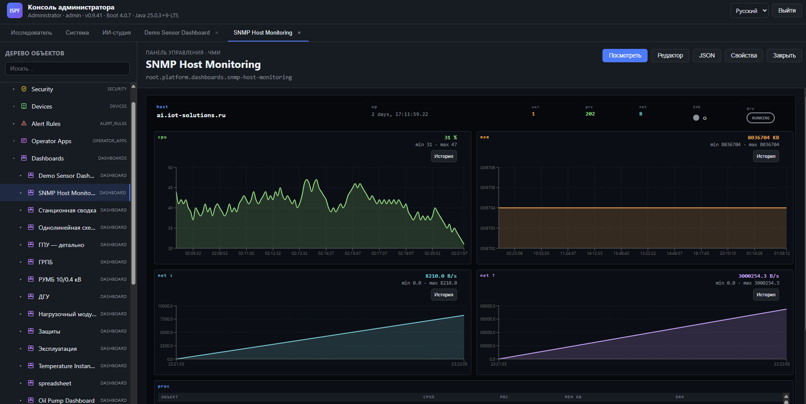
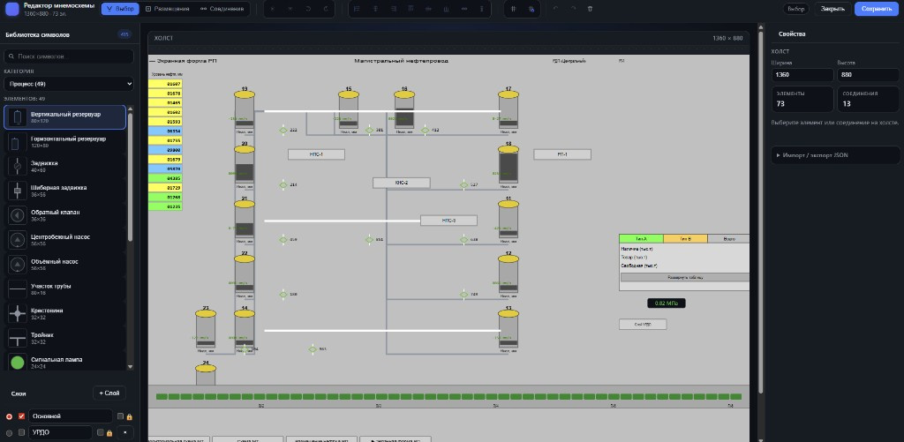
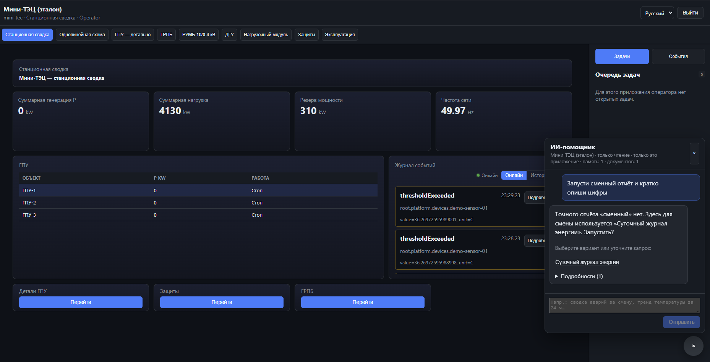
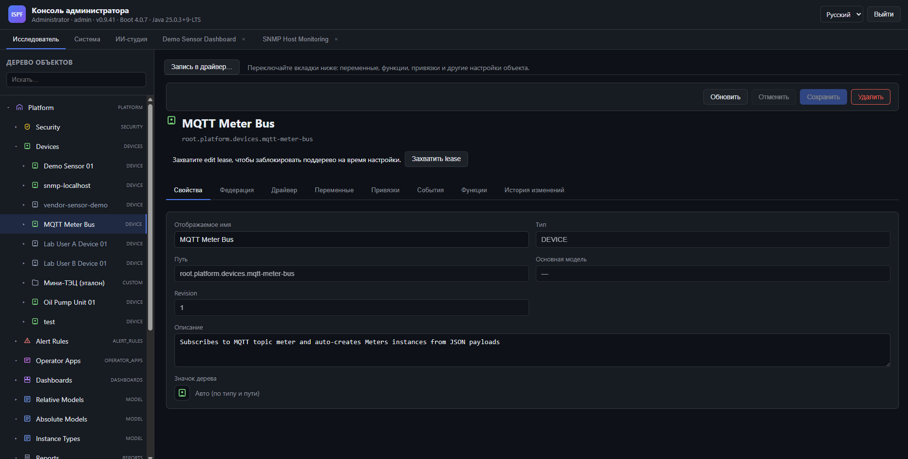
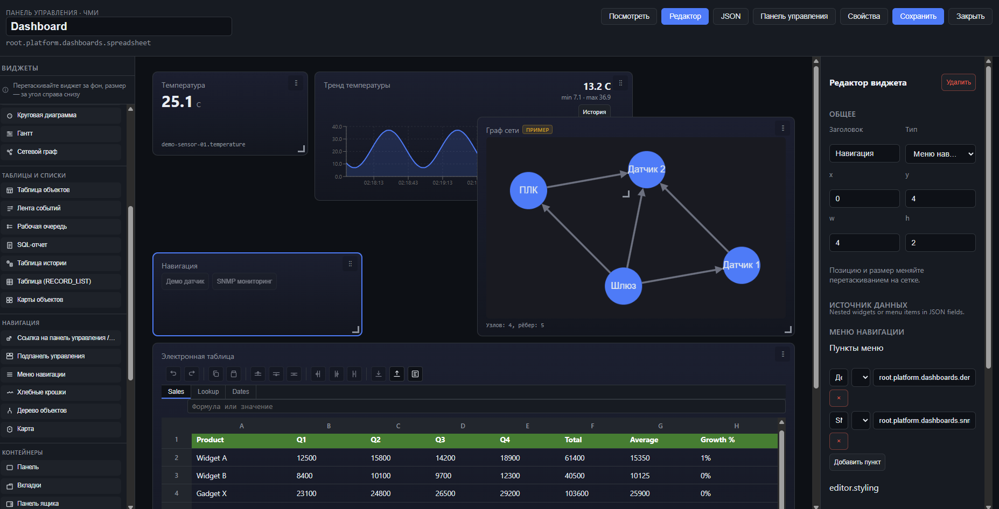
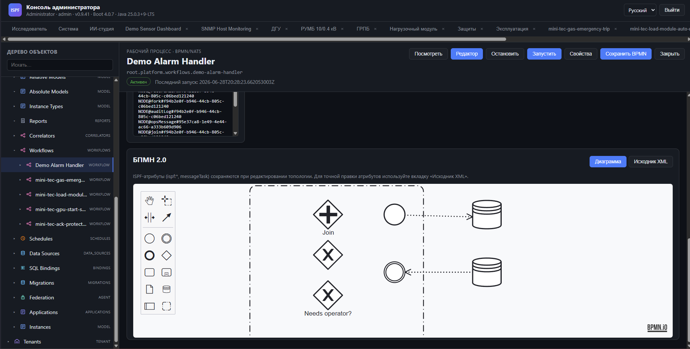
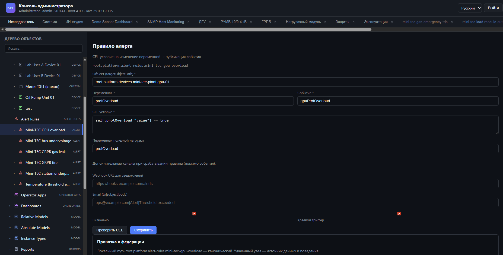
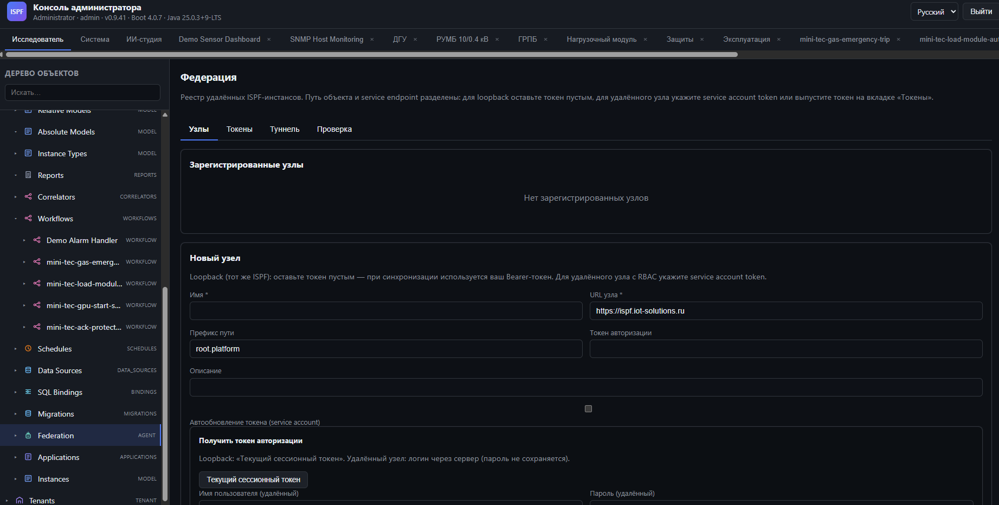
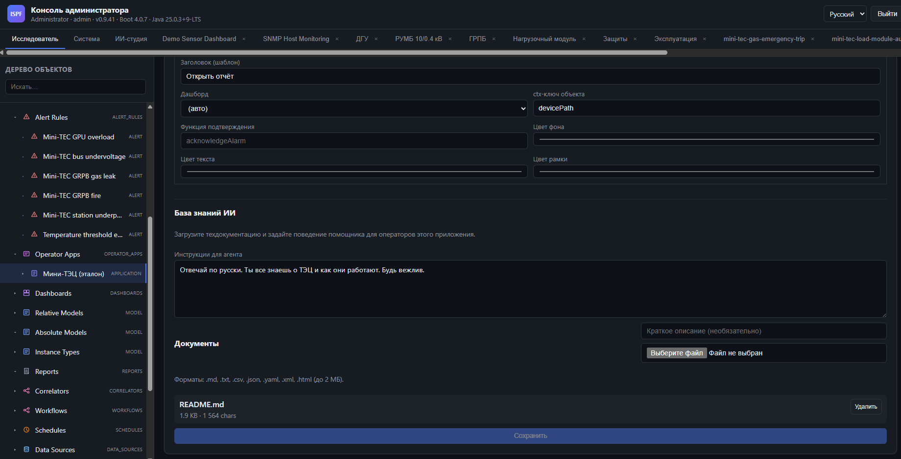
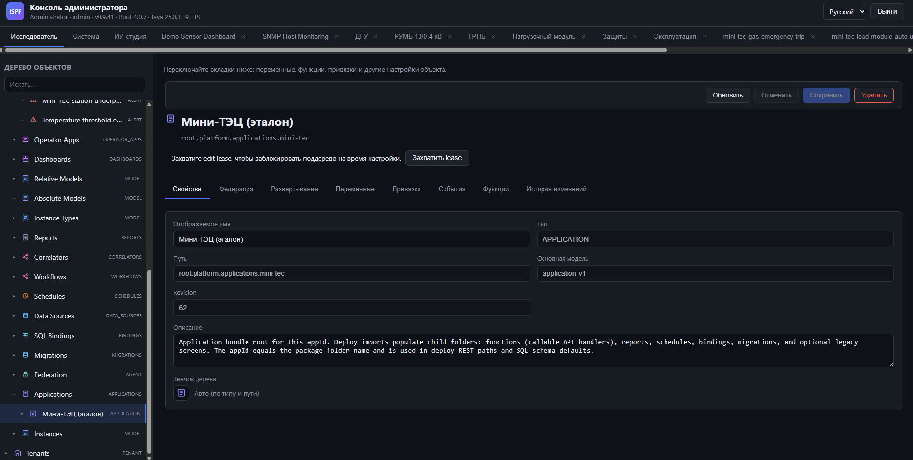

Инженерия. Сигналы. Процессы. Факты.
Сбор данных с поля, operator HMI, мнемосхемы P&ID, historian, алерты и производственные процессы — вокруг одного дерева объектов. Энергетика, нефтегаз, дискретное производство: от датчика Modbus до мнемосхемы и MES-отчёта без зоопарка OPC, historian и отдельного MES.

Классический проект: OPC-сервер + historian + SCADA + MES + интеграция. ISPF закрывает весь стек declarative-конфигурацией на дереве объектов — от полевого уровня до производственных отчётов и operator HMI.
Modbus, OPC UA, SNMP, MQTT, JDBC, Kafka — 58 драйверов. Auto-provisioning, virtual profiles, CEL-bindings.
Dashboard builder, виджет scada-mimic, редактор P&ID, alarm rules, correlators, historian.
Application platform: bundle deploy, SQL-отчёты, BPMN, JSON-функции, scheduler — без Java в ядре.
Мнемосхемы живут в object tree как объекты MIMIC: редактор символов, live-привязки
к переменным устройств, ортогональные соединения и управление с operator HMI.
Логика остаётся в дереве — схема только отображает и отправляет команды.
Полноэкранный редактор: палитра символов, слои, свойства, bindings и actions — без десктопного SCADA-пакета. Схема сохраняется в object tree и сразу работает на operator HMI.

Виджет scada-mimic на layout дашборда загружает схему с сервера.
Live-уровни, давление, таблицы резервуаров и управление — без дублирования тегов.
root.platform.mimics.* — одна схема на нескольких экранах
OPC-сервер, historian, HMI, workflow и MES-логика — узлы одного дерева объектов с единым REST/WebSocket API. Reference apps: энергетика (mini-tec), склад (warehouse), MES.
Modbus, OPC UA, SNMP, MQTT, JDBC, Kafka — полевой уровень без Java в ядре.
40+ виджетов, scada-mimic, редактор P&ID, CEL alert rules, TimescaleDB historian.
Bundle deploy, SQL-отчёты, BPMN, work queue, JSON-функции — declarative MES.
Устройство, дашборд, workflow, alert и приложение — единая модель данных.
User tasks для оператора, service tasks, CEL-шлюзы, эскалация без кода.
Edge + hub, catalog sync, bind overlay — распределённые площадки.
Устройства, модели, дашборды и приложения — в единой иерархии с типизированными переменными, событиями, функциями и auto-provisioning через MQTT.

40+ виджетов: графики, gauge, network graph, spreadsheet, map, SLD. Дорабатывайте экраны, созданные ИИ-студией, в visual editor.

BPMN 2.0 редактор с live-логами, user tasks в work queue, CEL-шлюзы и alert rules — всё как узлы дерева объектов.

Правила алерта — узлы дерева. CEL-условие на переменную → событие → webhook, email, workflow. Edge trigger и federation bind.

Peer registry, catalog sync, federation bind и outbound tunnel — edge-узлы за NAT подключаются к public hub без изменения object path.

JSON script runtime: setVar, when/if, INVOKE_FUNCTION — бизнес-логика без Java в server.
Отчёты на SQL с параметрами, экспорт из operator shell.
POST /bff/invoke — единая точка для UI без hardcoded routes.
ИИ-студия ускоряет настройку IoT/SCADA (устройства, дашборды, bundle). ИИ-агент на operator HMI помогает с отчётами и регламентами — поверх готового MES/HMI.
Опишите задачу обычным языком — агент выполняет шаги на платформе: создаёт устройства, дашборды, alert rules, публикует bundle.
Чат поверх operator shell: отчёты, дашборды, тренды, память сессии — с инструкциями и техдокументацией вашего приложения.
Tree-first агент работает на живом object tree: создаёт snmp-localhost,
настраивает метрики, собирает HMI — с прозрачным логом шагов и ссылками «Открыть устройство».
На HMI Мини-ТЭЦ оператор пишет «Запусти сменный отчёт» — агент находит нужный SQL-отчёт, предлагает кнопку запуска и объясняет цифры станционной сводки на русском языке.
В Operator Apps загрузите СОП, README, регламенты. Задайте системный промпт: «Отвечай по-русски, знаешь всё о ТЭЦ, будь вежлив» — агент станет экспертом вашей площадки.


Протоколы поля, historian на TimescaleDB, BPMN и web-HMI на React — production-ready для энергетики, нефтегаза и дискретного производства.
Demo-стенд: Мини-ТЭЦ (энергетика), SNMP-мониторинг, warehouse и BPMN. IoT → SCADA → MES на одной платформе — попробуйте на своих сценариях.